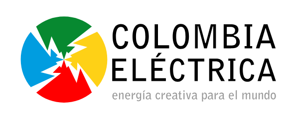
CASE STUDY 002 / MOBILE AUGMENTED REALITY
Drones espaciales
y asteroides.
From physical to digital.
Designing the mobile interface that connects collaborative puzzle-building with an augmented space station.
A SHARED UNIVERSE / A DIFFERENT INTERACTION
Build together.
Discover in 3D.
Students assembled physical puzzles, then used a mobile application to see elements of a futuristic space station through augmented reality.
This case focuses on the interface and the transition from instructions to camera-based exploration.
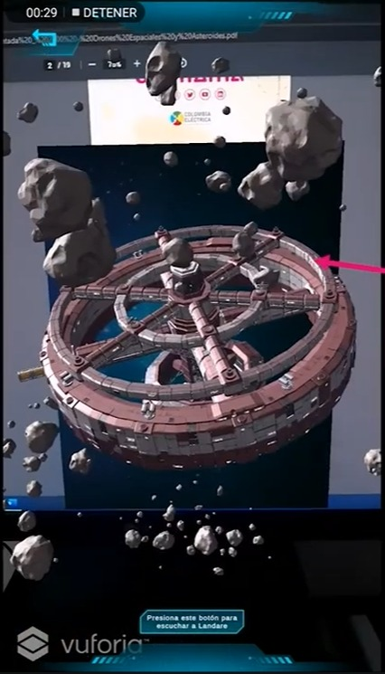
01 / CONTEXT & CONTRIBUTION
An educational experience
beyond the screen.
I contributed UX/UI proposals in Figma before the application was implemented by the development team.
Disruptores Lab was delivered in 2021 within Inspiración Comfama, with Colombia Eléctrica as the executing company. The program served tenth- and eleventh-grade students in public and private schools in Medellín.
The mobile activity emphasized collaboration: students built puzzles representing elements of a futuristic space station, then explored digital representations through augmented reality. The interface needed to bridge physical activity, camera use, and on-screen discovery.
My professional engagement was with Colombia Eléctrica. Comfama was the project client. The supplied project report documents my UX/UI contribution to both the PC game and the mobile application.
02 / MOBILE JOURNEY
From instructions
to spatial discovery.
- 01
Choose
Scan markers or access the booklet.
- 02
Understand
Read how to begin the AR experience.
- 03
Wait
Follow preparation progress.
- 04
Explore
Use the camera to find the reference.
- 05
Frame
Point at the booklet image or marker.
- 06
Discover
View spatial content over the real environment.
The capture sequence demonstrates scanning a booklet displayed on a monitor. The report describes its wider use with physical puzzles in educational sessions. These are related contexts, not proof that every screenshot shows a classroom activity. Camera permission is a system prerequisite; its exact timing is not confirmed.


04 / GUIDANCE
Explain the physical action.
The instruction screen explains that the camera should point at codes or images in the booklet. The start action follows that explanation, with a return control for navigation.
01 / DOCUMENTED WIREFRAME

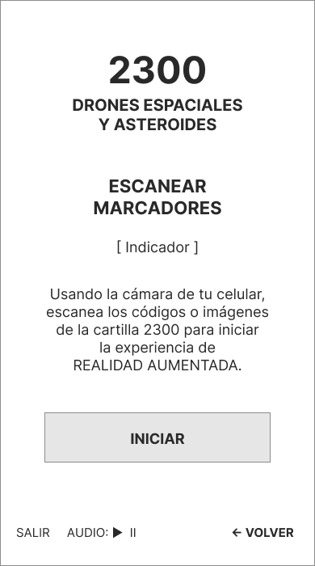
02 / IMPLEMENTED INTERFACE

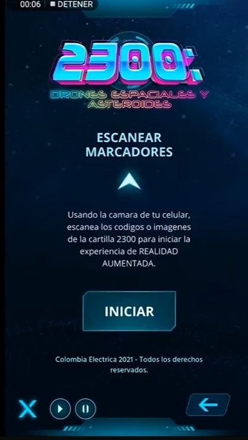
05 / SYSTEM FEEDBACK
Make preparation visible.
A progress indicator and a short loading message communicate that the AR experience is being prepared. The capture shows 28%; its full duration and completion logic are not established.
01 / DOCUMENTED WIREFRAME

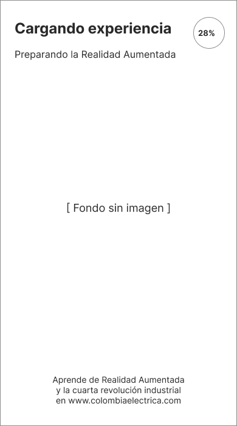
02 / IMPLEMENTED INTERFACE

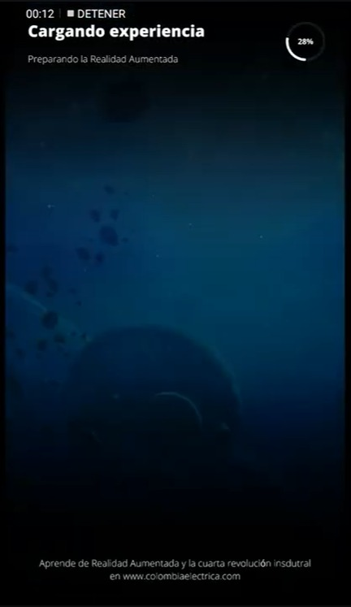
06 / CAMERA EXPLORATION
A window into the environment.
The camera becomes the main view. A return action and an audio control sit around the real-world scene. At this stage no augmented object is visible.
01 / DOCUMENTED WIREFRAME

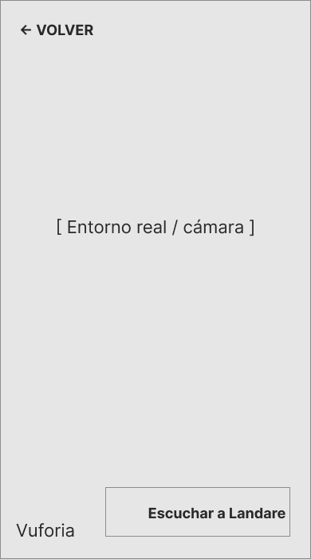
02 / IMPLEMENTED INTERFACE

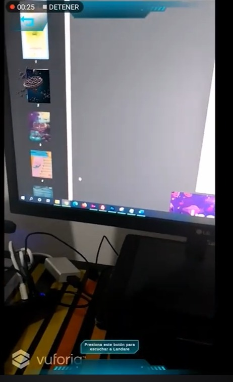
07 / MARKER FRAMING
Connect the reference to the camera.
This second camera state shows the booklet being framed. It helps explain the physical-to-digital transition. The reference appears to be an image marker; a QR code is not confirmed.
01 / DOCUMENTED WIREFRAME

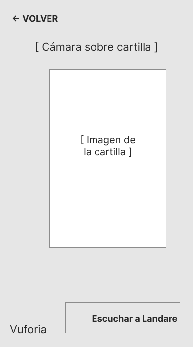
02 / IMPLEMENTED INTERFACE

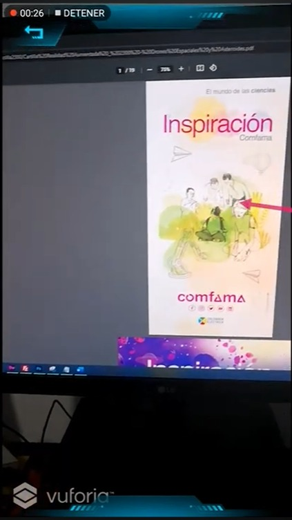
08 / AUGMENTED CONTENT
The space station comes into view.
The implemented capture shows a circular spatial structure and asteroids superimposed over the camera view. The educational intent was to connect constructed physical elements with their digital representation.
01 / DOCUMENTED WIREFRAME

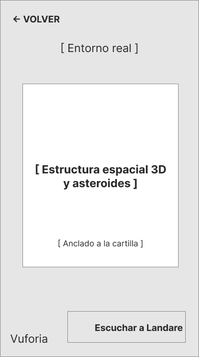
02 / IMPLEMENTED INTERFACE

09 / SUPPORTING REFERENCES
System permission & brand context.
These views are documented separately from the six-step scanning journey.
SYSTEM / ANDROID
Permission belongs to the operating system.
The native Android dialog asks for camera access. This is a platform-controlled surface, not an app screen attributed to my interface design. A denied-permission recovery path would need validation.
01 / DOCUMENTED WIREFRAME

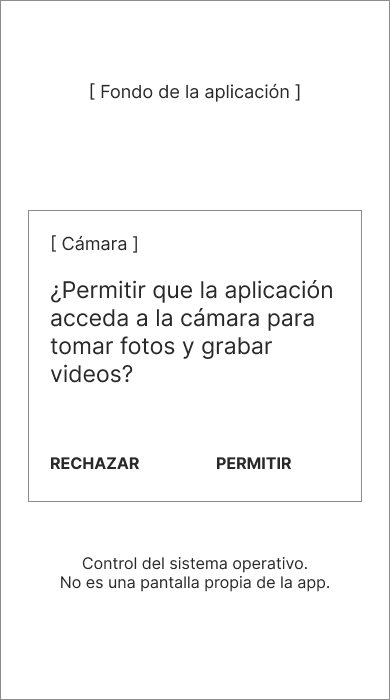
02 / IMPLEMENTED INTERFACE

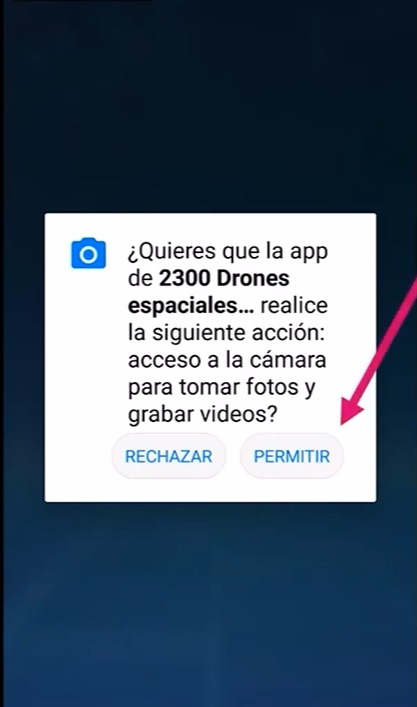
BRAND / POSITION UNCONFIRMED
A shared identity with the PC game.
The capture includes the 2300 identity and Unity credit. It appears at the end of the recording, but its role as startup, exit or restart has not been confirmed; it is not placed in the main journey.
01 / DOCUMENTED WIREFRAME

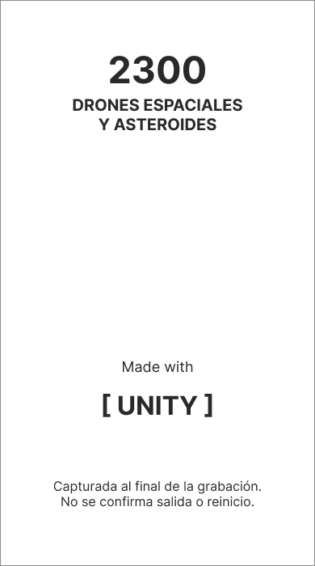
02 / IMPLEMENTED INTERFACE

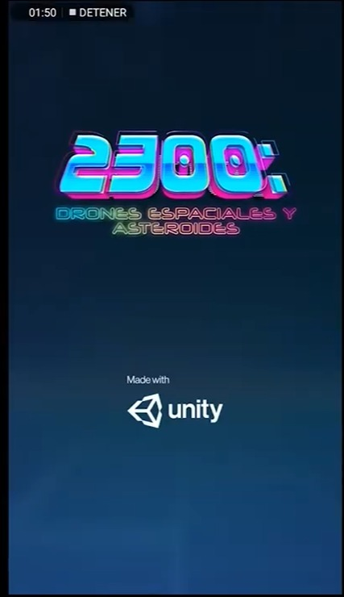
10 / REFLECTION
Designing across physical
and digital interaction.
What the work demonstrates
UX/UI proposals for an educational mobile context, connecting instructions, system feedback and camera-based discovery. The PC and mobile products shared a visual universe while supporting different activities: individual challenge and collaborative exploration.
What I would validate next
Marker-framing guidance, detection feedback, tracking loss, permission recovery, loading failure and audio discoverability. These are current review opportunities, not verified features or measured improvements.
Educational goals are presented as project intentions. No measured gains in learning, collaboration or usability are claimed.
Open mobile wireframes ↗THE SAME UNIVERSE / PC GAME
Explore the other experience.
The PC game focused on spacecraft preparation, navigation and a timed mission.